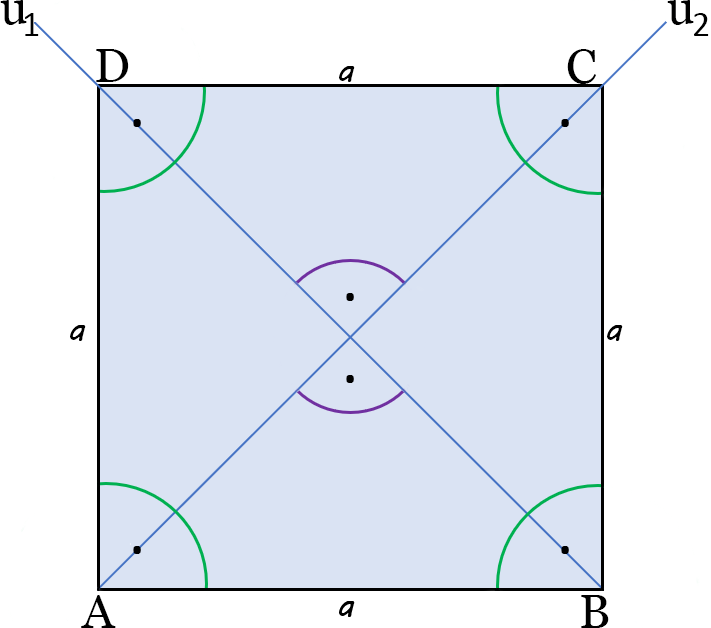

Calcit
Největší databáze vzorečků, kalkulaček a online kalkulátorů
Obvod a obsah čtverce
Vlastnosti čtverce
- Všechny strany jsou stejně dlouhé, sousední svírají pravý úhel (90°).
- Úhlopříčky jsou stejně dlouhé, na průsečíku se navzájem půlí a svírají pravý úhel.

Vysvětlivky
a = označení strany
u = úhlopříčka
Úhlopříčka je úsečka vedoucí napříč obrazcem.
Vzorečky
Obvod O = 4 * a
Obsah S = a * a = a2
?